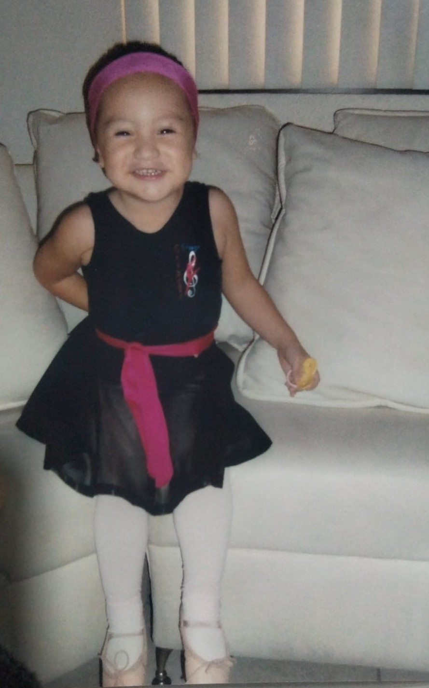

Mis primeros años
Cuando tenía apenas 3 años entré a clases sabatinas de baby ballet. Me encantaba ir con mis zapatillas, leotardo y mallas. Poco a poco fui tomando más confianza, por lo que además de ballet hacía jazz y folklore español. Participé en varios recitales de mi academia y me enamoré de los escenarios.
Parte de mi vida
Aunque dejé de asistir a una academia de danza como tal, siempre me gustó practicar en casa. Junto con mi hermana menor montábamos coreografías en la sala de nuestra casa para fechas especiales, disfrutábamos de bailar al ritmo de cualquier tipo de canción, además de tocar los distintos instrumentos que mi papá tenía en su colección. Desde pequeña aprendí que la música y la danza eran parte vitales de mi desarrollo. Actualmente me encanta programar al ritmo de una buena canción.

La danza en la actualidad
Gracias al departamento de arte y cultura y a Miss Majo por abrir el taller de danza urbana ♥, pude retomar mi pasatiempo favorito, para mí es liberedor bailar, sentir la música y presentarme en un escenario. El próximo mes cumplo un año dentro del taller y me siento muy orgullosa de mi crecimiento tanto personal como bailarina.